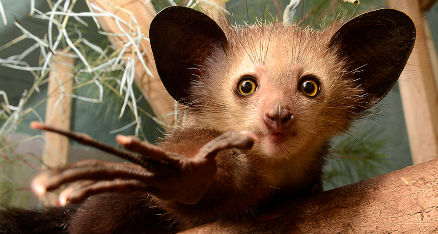

Empathy Machine ---- Aye-aye
Yufei Zhang
Motivation 
The aye-aye (Daubentonia madagascariensis) is a lemur, a strepsirrhine primate native to Madagascar that combines rodent-like teeth that perpetually grow and a special thin middle finger.
I chose Aye-aye is because since I was a children and saw them in the documentary. However, due to the excessive killing from the local people and the reduction of the forest range, Aye-aye have now become endangered species. So I want to make a project to let people know more about them and their way of survive.
Experiential Aspect
Special thin middle finger
Aye-aye is the world's largest nocturnal primate, and is characterized by its unusual method of finding food: it taps on trees to find grubs, then gnaws holes in the wood using its forward slanting incisors to create a small hole in which it inserts its narrow middle finger to pull the grubs out. This foraging method is called percussive foraging, and takes up 5–41% of foraging time.
From an ecological point of view, the aye-aye fills the niche of a woodpecker, as it is capable of penetrating wood to extract the invertebrates within.Therefore, when I design my empathy machine, I hope it will make people better understand this special way of foraging.
Idea & Concept
The main part of my empathy machine should be Aye-aye's middle finger, so that users can experience foraging in this way without seeing the object.
In order to let the user better understand the process of foraging, my first design is to put a piezo sensor in a simulated wood, so that when the user uses the analog finger to hit the wood, Arduino can know that the user is tapping. The location of the worm will be desided in the program, and then Arduino gives feedback to the user through the electronic component, to simulate the process of Aye-aye forging with the percussion sound.
But then I found this design method to have some problems. I don't want to make the wood itself a part of the machine. Because the original intention of this machine is to make the user experience become the feeling of the animal, the wood will cause the user to separate from the experience and experience the process from the perspective of the observer. So my design ideas have been modified:
In the second edition of the design, the entire experience begins with a quick tap that mimics Aye-aye. After the tap is over, the machine gives the user a silent feedback to simulate Aye-aye's process of finding food. The user then responds based on random feedback to simulate the process of using the middle finger for foraging after Aye-aye tapping.
Making & Product
Step 01: Two tap to start the system. [Blue Light On]
Step 02: Quick tap to find worm. [White Light On]
Step 03: Follow the viberation to dig out warm. [Green Light On]
Future Iteration
Step 01: Two tap to start the system. [Blue Light On]
Step 02: Quick tap to find worm. [White Light On]
Step 03: Follow the viberation to dig out warm. [Green Light On]
a）Find new ways to get more specific, vibration feedback with direction information.
b）Feedback allows the user to actually find objects in a certain direction rather than just repeating the feedback.
c) Now users of this project want to use this product smoothly, based on background knowledge and information on different steps. In the future, I want to add more instructions on the product itself, so that users can use the product when they only knows the most basic information about Aye-aye.